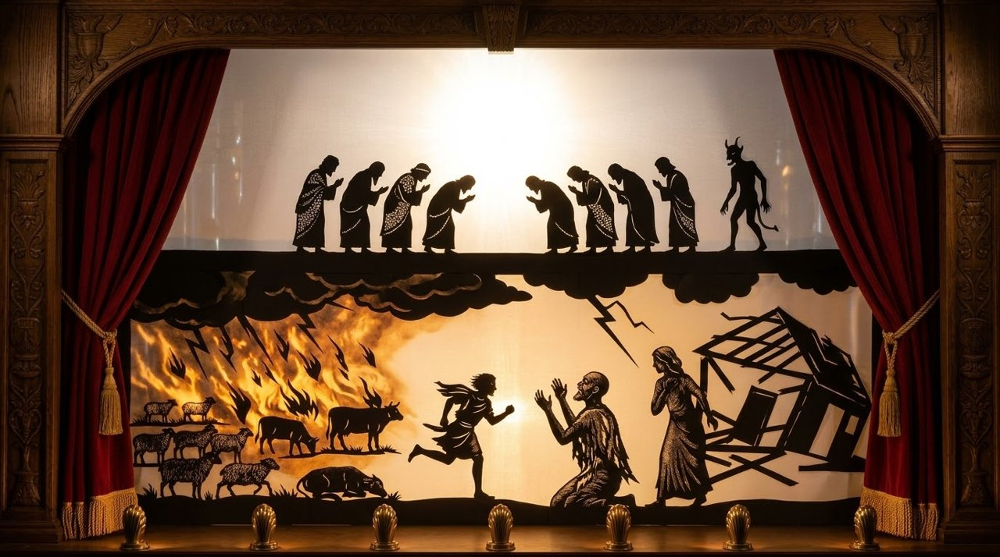

Job 1–2: The Trial Begins
The greatest man on Earth at this moment, according to God.
✦ ✦ ✦Use the arrow keys or swipe to move. Tap any gold reference to read the verse.

Where we are: Part 1, Job 1–2
If the Book of Job was one chapter, the lesson is present and clear. But as we'll see, there is so many more lessons to learn than simple perseverance in faith.
The Book of Job is the finest example of literature ever written.
There was a man in the land of Uz
There was a man in the land of Uz, whose name was Job; and that man was perfect and upright, and one that feared God, and eschewed evil. And there were born unto him seven sons and three daughters. His substance also was seven thousand sheep, and three thousand camels, and five hundred yoke of oxen, and five hundred she asses, and a very great household; so that this man was the greatest of all the men of the east.Job 1:1-3
The Book of Job begins with the introduction of a man in the land of Uz, the titular character; Job. Uz, from the biblical clues appears to be a fertile plain in the Arabian peninsula, near where Edom would be. The time frame, many believe, is during the era of the patriarchs; Abraham, Isaac, and Jacob.
Before Abraham's seed
It would be good to note that, Abraham, or Abram, was a Chaldean, a nation who are mentioned here in this chapter located in what is modern Iraq. Where the seat of Babylonian power would be. And he was called out from the city of Ur there, to go unto Hebron by God.
And, as mentioned throughout his story and his sons', there were people in this post flood era who feared the Lord, and offered sacrifices unto him.
Of course we know about Melchizedek, King of Salem, and high priest, and the tenth of the spoils offered by Abram to Melchizedek. Many consider him to be a pre-incarnate appearance of Jesus.
All this to say that the idea of the worship of God originating with Abraham, and only his seed after the flesh, is incorrect. There were many following the flood and the dispersion of nations out from Babel, that called upon the name of the Lord for salvation, and sought to offer the blood as a picture of their faith in Him, as we see Job does for himself and his family.
Salvation always offered to all people
One of the conceits of modern Zionism and dispensationalism holds that only the sons of Israel after the flesh were special, and that they invented monotheism. But throughout the Bible we find people who were not of that line, and not given to idols and false gods. It's important to understand that salvation has always been by grace alone through faith in the Lord, calling upon his name. And that salvation was always offered to all people.
We will see in Exodus the mixed multitudes that followed Israel into the wilderness from Egypt. We will see high priests of other nations that fear the Lord. There will be people like Ruth and Rahab and others who have the faith.
The distinction for Israel was that they were given the oracles of God. That they had the prophets and the word of God delivered directly to them, and given the law of the Lord that they may be perfect, complete, and a light unto the Gentiles. The other nations. Calling all men to repentance.
Thus did Job continually
And his sons went and feasted in their houses, every one his day; and sent and called for their three sisters to eat and to drink with them. And it was so, when the days of their feasting were gone about, that Job sent and sanctified them, and rose up early in the morning, and offered burnt offerings according to the number of them all: for Job said, It may be that my sons have sinned, and cursed God in their hearts. Thus did Job continually.Job 1:4-5
But we see the greatest man on Earth at this moment, according to God, who feared Him, eschewing evil, offering sacrifices to sanctify himself and his family. Without the law. Without the temple. Without a priesthood. Without the oracles of God, knowing by the faith of his fathers what was expected.
And so we find Job, faithfully keeping the sanctification of sacrifices for himself and his children, and he has been blessed beyond measure by God.
10 children, seven sons and three daughters. Incredible wealth and cattle and livestock. Great land and a great house. And all his adult children successful in that they were established in their own homes to have their own feasts. Having established all of this, the Bible shifts focus to the throne of God in Heaven.
The sons of God came
Now there was a day when the sons of God came to present themselves before the Lord, and Satan came also among them.Job 1:6
I've covered this multiple times in other studies, but the sons of God here refers to the spirits of those saved by faith in Christ. The same as the sons of God in being the children of obedience, through Seth. Because the only way to become A son of God, is by faith in THE Son of God.
So, not to belabor the point, but at no time has God called angels His sons. And further evidence of this is in the text itself, in verse 6. Satan came also among them.
Satan is an angel. A rebellious angel, a cherub. Perhaps a prominent angel but, an angel nonetheless. And he came among them, as a separate entity than them. Not as one of them.
Believers in heaven, not angels
For unto which of the angels said he at any time, Thou art my Son, this day have I begotten thee? And again, I will be to him a Father, and he shall be to me a Son?Hebrews 1:5
They're in heaven, so they must be believers—only the redeemed go there (). Satan's "among them" but not one of them; he's the accuser, not a son. The repetition in changes nothing—same believers, same contrast with Satan.
The Bible makes it clear how one becomes a "son of God": through faith in the Lord. This is the foundation—sonship is granted to humans who believe in Christ.
God is not the author of confusion. If your interpretation of scripture causes a contradiction, creates a question that cannot be answered by comparing scripture to scripture, then it's wrong.
To and fro in the earth
And the Lord said unto Satan, Whence comest thou? Then Satan answered the Lord, and said, From going to and fro in the earth, and from walking up and down in it.Job 1:7
And God asks him where he's been, and he says going to and fro in the earth and walking up and down in it.
Be sober, be vigilant; because your adversary the devil, as a roaring lion, walketh about, seeking whom he may devour:1 Peter 5:8
Christians should remember that Satan continues this practice today. And like his appearance before God, to accuse Job, he does the same of us even now.
The accuser of our brethren
And the great dragon was cast out, that old serpent, called the Devil, and Satan, which deceiveth the whole world: he was cast out into the earth, and his angels were cast out with him. And I heard a loud voice saying in heaven, Now is come salvation, and strength, and the kingdom of our God, and the power of his Christ: for the accuser of our brethren is cast down, which accused them before our God day and night. And they overcame him by the blood of the Lamb, and by the word of their testimony; and they loved not their lives unto the death.Revelation 12:9-11
Satan is our adversary, the god of this world, and our accuser before the Lord.
I sometimes wonder if he even bothers with the unsaved, beyond giving them power that they can afflict those who are saved. His resentment is in those sons of God, that God so loved us that He gave His only begotten Son for us, knowing that hell was created for him and the angels he deceived.
Hast thou considered my servant Job?
And the Lord said unto Satan, Hast thou considered my servant Job, that there is none like him in the earth, a perfect and an upright man, one that feareth God, and escheweth evil? Then Satan answered the Lord, and said, Doth Job fear God for nought? Hast not thou made an hedge about him, and about his house, and about all that he hath on every side? thou hast blessed the work of his hands, and his substance is increased in the land. But put forth thine hand now, and touch all that he hath, and he will curse thee to thy face.Job 1:8-11
Now God knows who Satan is and what he does and His pointing out Job is deliberate, and in so many ways this is done for our admonition, upon whom the end of the world has come.
If a man as upright and perfect in his ways can be sorely tempted by the persecution of Satan against him, If the hedge of protection may be lifted, to show the glory of God for such a man as Job, how can we expect the small tragedies that befall us as believers to be any less to His glory?
And in our darkest moments, the voices of the scoffers cut like a knife. Satan uses them to attack our faith, as he sought to shake Job's.
Blessed or cursed
Satan of course credits the hedge of protection God has placed around Job and his family and the blessings of the holdings that he's acquired which are gifts of God, as the only reason Job's faith is so strong. He says to God that if He put forth His hand now and touched all that he had, Job would curse Him to his face.
Only the wicked prosper?
I have seen an error among people similar to this, that says only the wicked prosper. Job shows this isn't the case and that wealth in itself is not a bad thing, but that all we have is a gift of God.
The prosperity Gospel
Then there's the prosperity Gospel types, who falsely say that if you're not successful and you're not succeeding, that you're not right with God.
But here we humbly learn that whether we are blessed or cursed, all is to His glory. As Paul writes:
I know both how to be abased, and I know how to abound: every where and in all things I am instructed both to be full and to be hungry, both to abound and to suffer need.Philippians 4:12
Whether you're in good times or bad times or the mix most of us find ourselves in, it's all to the glory of God. His grace is sufficient.
All that he hath is in thy power
And the Lord said unto Satan, Behold, all that he hath is in thy power; only upon himself put not forth thine hand. So Satan went forth from the presence of the Lord.Job 1:12
Now the Lord says to Satan, behold all that he hath is in thy power but bars him from doing harm to Job physically.
The prime interpretation of this is that God has granted Satan special permission to afflict Job, And that is a fair reading of the text, especially in light of the hedge of protection Satan says God has placed about Job. But, as I've mentioned, the Bible says that Satan is the god of this world, That he is the prince of the power of the air, ruler of this world. Not as God, but as having influence and power over the things of this Earth.
So is the Lord reminding Satan, or enabling him? It's difficult to say. But we should keep it in mind always.
For we wrestle not against flesh and blood, but against principalities, against powers, against the rulers of the darkness of this world, against spiritual wickedness in high places.Ephesians 6:12
In one day, he does his worst
But regardless, Satan is given the power to affect all that Job has, if not his person. And in one day, he does his worst. First we see that his sons and his daughters were eating and drinking wine and in the eldest brother's house, this detail is given before the rest, creating tension in the reader.
Fire from heaven
When God gave permission to Satan to do what he will, he gave him access to the fire of God that rains from Heaven.
And I beheld another beast coming up out of the earth; and he had two horns like a lamb, and he spake as a dragon. And he exerciseth all the power of the first beast before him, and causeth the earth and them which dwell therein to worship the first beast, whose deadly wound was healed. And he doeth great wonders, so that he maketh fire come down from heaven on the earth in the sight of men,Revelation 13:11-13
The false prophet of the Antichrist will have this power and ability, And it will cause the unsaved to worship the beast and his image.
Surrounded by evil
Job was beset from the south, from above, from the north and from all four corners, surrounded by evil. And the devil allowed a sole survivor from each.
The coordination and power and influence that the devil has where he can have two different armies attack at the same time, controlling fire from heaven, and the winds of the air, that the sole survivors of each would arrive one after the other, to absolutely devastate Job, shows Satan's cunning wickedness. Each blow would be sufficient to cripple most men. To have them come one after the other after the other after the other, in quick succession is unimaginable.
And worshipped
Then Job arose, and rent his mantle, and shaved his head, and fell down upon the ground, and worshipped, And said, Naked came I out of my mother’s womb, and naked shall I return thither: the Lord gave, and the Lord hath taken away; blessed be the name of the Lord. In all this Job sinned not, nor charged God foolishly.Job 1:20-22
These were the manner and customs throughout the Old Testament for mourning. We see here that worship is defined as falling to your knees or bowing down. Job in absolute sorrow tears his clothes, shaves his head for the dead, and lays face first down upon the ground.
And the prayer Job makes contains two statements that have both become idioms even among the secular world.
And despite all of this tragedy, despite all of the cause Satan gave him to sin, Job sinned not. And he didn't blame God, but rather blessed His name.
Naked shall I return thither
“Naked came I… naked shall I return thither” – “Thither” or shām in the Hebrew means, “to that place." Clearly Job doesn't mean the womb. The return is to what then? What is thither? The grave? "Sheol" and nothingness?
We're going to see that Job's faith is redemption through the Lord. Not that empty meaning that many give in their Old Testament interpretations.
Either way, Job sees life as lease, not ownership, that all is from God, Who is blessed forever. It's humbling and something we should always keep in mind. Life is a vapor.
In the sweat of thy face shalt thou eat bread, till thou return unto the ground; for out of it wast thou taken: for dust thou art, and unto dust shalt thou return.Genesis 3:19
The finest example of literature
Thematically, as prose, this setup creates tension in the reader. I'll probably say this multiple times throughout this study, but the Book of Job is the finest example of literature ever written.
While its exact date of composition isn't known, it likely found its final form during the Babylonian captivity. Shortly thereafter, in the Hellenistic world, the Greek drama became a literary style. Acted out by people, to tell a story either from a monologue or a soliloquy or a troupe of performers.
Because we are gifted with the King James version, and its eloquent prose in what many would say is Shakespearean English, it's easy to picture the Book of Job as a play. And it is possible to perform, and many have. And it is greater than all of the plays the Bard penned.
Isn't it interesting that it was put to pen under the inspiration of God, separate from and before the Greek tragedies and comedies that the world now considers classic literature?
Again before the Lord
The Book of Job continues into chapter 2. I've often thought that, had Job been confined to just the first chapter it would serve as a great lesson in patience and understanding in the faith. But in the wisdom of God it continues, bringing many other lessons to us.
Again there was a day when the sons of God came to present themselves before the Lord, and Satan came also among them to present himself before the Lord. And the Lord said unto Satan, From whence comest thou? And Satan answered the Lord, and said, From going to and fro in the earth, and from walking up and down in it. And the Lord said unto Satan, Hast thou considered my servant Job, that there is none like him in the earth, a perfect and an upright man, one that feareth God, and escheweth evil? and still he holdeth fast his integrity, although thou movedst me against him, to destroy him without cause.Job 2:1-3
Again, the spirits of the righteous men in Heaven come before God, and among them the devil comes. And again he's been to and fro in the Earth, and walking up and down it.
And the Lord said unto Satan hast thou considered Job? That there's none like him the perfect and upright man, who is still holding fast his integrity even though Satan had moved God to destroy him without a cause.
Touch his bone and his flesh
And Satan answered the Lord, and said, Skin for skin, yea, all that a man hath will he give for his life. But put forth thine hand now, and touch his bone and his flesh, and he will curse thee to thy face. And the Lord said unto Satan, Behold, he is in thine hand; but save his life. So went Satan forth from the presence of the Lord, and smote Job with sore boils from the sole of his foot unto his crown. And he took him a potsherd to scrape himself withal; and he sat down among the ashes.Job 2:4-8
And Satan says that a man will give up anything for his life. He calls God to afflict Job by touching his bone and flesh and says that he will curse God to His face. And so God agrees, saying only take not his life. And Satan afflicts Job with pustulant boils from the soles of his feet to the crown of his head.
Poor Job sits in ash, mourning, And now is taking a shard of pottery to his skin to scrape himself of the sores. Miserable, having lost everything and now afflicted with a painful and disgusting curse.
Curse God, and die
Then said his wife unto him, Dost thou still retain thine integrity? curse God, and die. But he said unto her, Thou speakest as one of the foolish women speaketh. What? shall we receive good at the hand of God, and shall we not receive evil? In all this did not Job sin with his lips.Job 2:9-10
His wife is disgusted with his continued faith, and says curse God and die. But he said that this is foolish. That if we receive good at the hands of God shall we not receive evil?
And Job sinned not with his lips.
The continued patience of Job is a testament that we should seek to emulate. As bad as things are we've all been blessed beyond anything we deserve by God's grace. His grace is sufficient.
My grace is sufficient for thee
Paul, similarly had bemoaned a thorn in his flesh, appealing to God three times saying that he would be so much more useful in the cause of Christ if he had it removed. It took him a while to understand.
For though I would desire to glory, I shall not be a fool; for I will say the truth: but now I forbear, lest any man should think of me above that which he seeth me to be, or that he heareth of me. And lest I should be exalted above measure through the abundance of the revelations, there was given to me a thorn in the flesh, the messenger of Satan to buffet me, lest I should be exalted above measure. For this thing I besought the Lord thrice, that it might depart from me. And he said unto me, My grace is sufficient for thee: for my strength is made perfect in weakness. Most gladly therefore will I rather glory in my infirmities, that the power of Christ may rest upon me.2 Corinthians 12:6-9
Our suffering exists for many reasons, but ultimately it is to give glory to God for His grace and His mercy. That while we are weak He is strong and our strength. Even if it's just to humble us that we glory not in ourselves.
Job's three friends
Now when Job’s three friends heard of all this evil that was come upon him, they came every one from his own place; Eliphaz the Temanite, and Bildad the Shuhite, and Zophar the Naamathite: for they had made an appointment together to come to mourn with him and to comfort him. And when they lifted up their eyes afar off, and knew him not, they lifted up their voice, and wept; and they rent every one his mantle, and sprinkled dust upon their heads toward heaven. So they sat down with him upon the ground seven days and seven nights, and none spake a word unto him: for they saw that his grief was very great.Job 2:11-13
Eliphaz
the Temanite
Bildad
the Shuhite
Zophar
the Naamathite
And so the scene shifts as three of Job's friends arrive from far off, barely recognizing him. They enter and sit down with him on the ground, for 7 days and seven nights and none speak to him for they saw that his grief was very great.
We will learn more about each as the story progresses.
What we have seen
- The greatest man on EarthWithout the law. Without the temple. Without a priesthood. Without the oracles of God, knowing by the faith of his fathers what was expected.
- The sons of GodThe only way to become A son of God, is by faith in THE Son of God.
- The accuserSatan is our adversary, the god of this world, and our accuser before the Lord.
- Blessed or cursedWhether we are blessed or cursed, all is to His glory. His grace is sufficient.
- Job sinned notDespite all of the cause Satan gave him to sin, Job sinned not. And he didn't blame God, but rather blessed His name.
Related